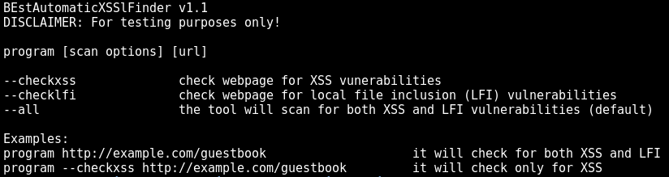
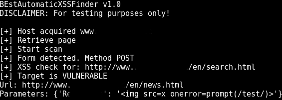
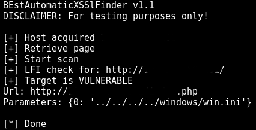

This is a python script designed to automatically find XSS (cross-site scripting) and LFI (local file inclusion) vulnerabilities.
It uses a predefined dictionary of XSS/LFI attacks that can easily be extended. The tool is set to stop after the first successful attempt, however it's trivial to modify it to show all findings.
The tool is released only for testing purposes!
How to use:
Just point and shoot. Optionally you can use either --checkxss, --checklfi or --all. The default option is --all

options

XSS scan

LFI scan
Here you can find the code on github.